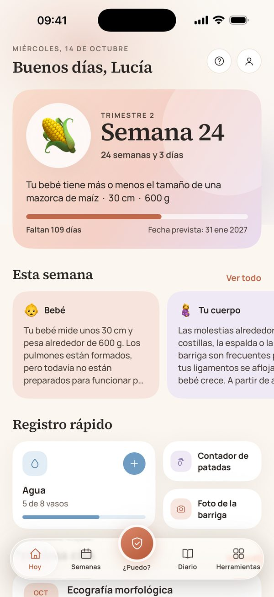
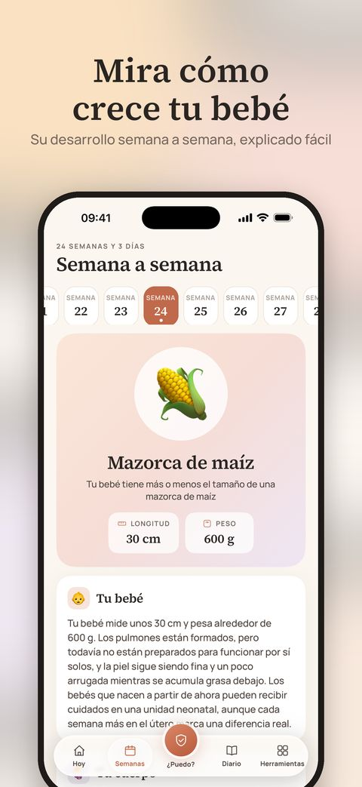
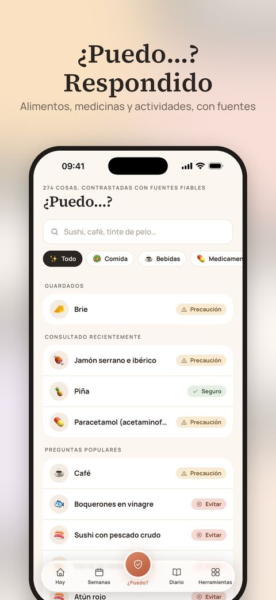
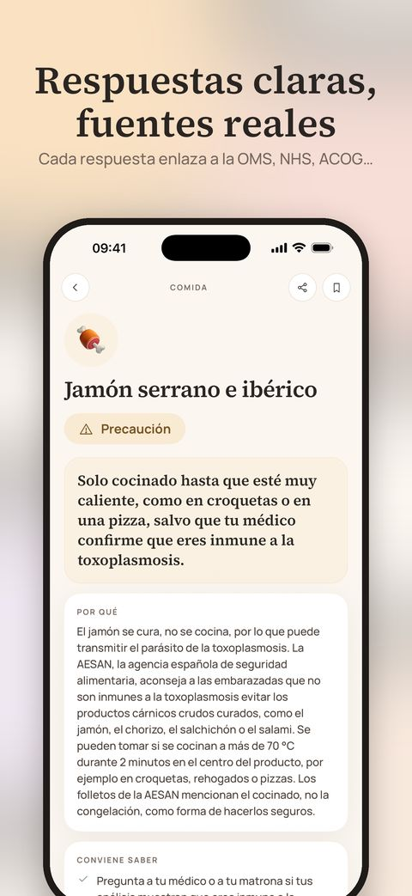
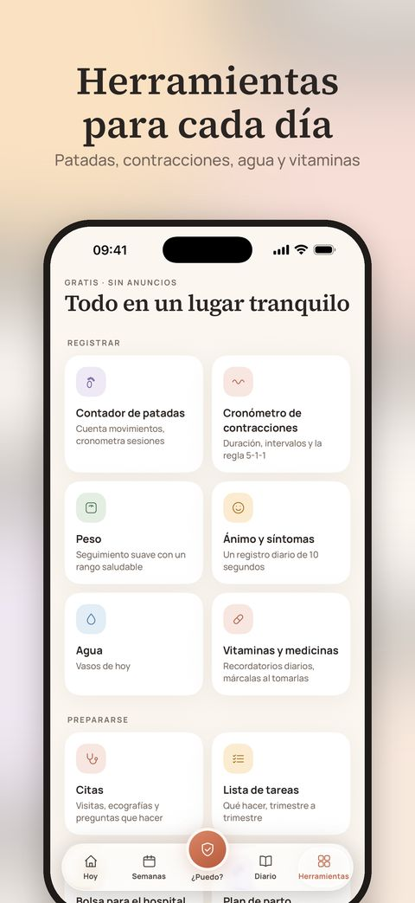
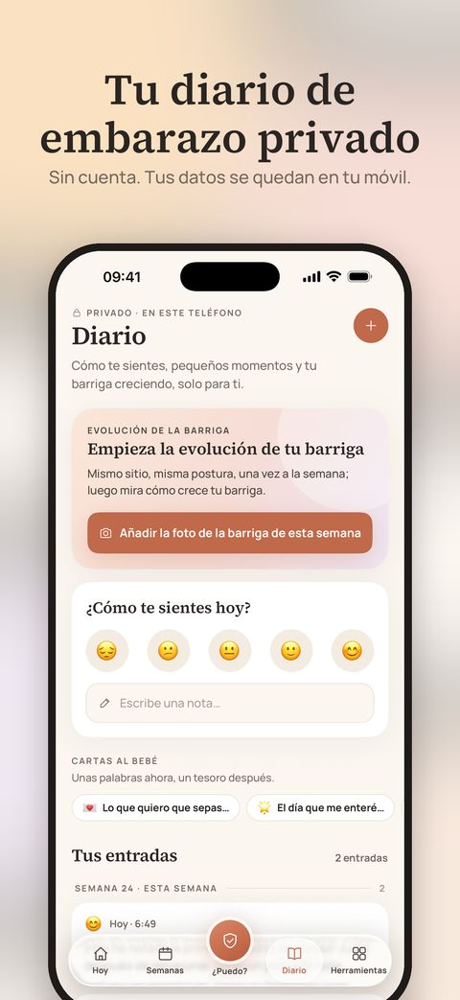

English · Türkçe · Español · Deutsch · Français · Português
Una compañía tranquila para los próximos nueve meses.
Guía semana a semana, respuestas claras a “¿Puedo…?” con fuentes reales y herramientas amables para cada día — todo privado, directamente en tu iPhone.
Descargar en el App StoreGratis · iPhone · Sin necesidad de cuenta

Todo lo que buscas, en un solo lugar
Semana a semana
El tamaño de tu bebé, lo que se está desarrollando, lo que puedes sentir y tres consejos prácticos para cada semana, de la 1 a la 42.
“¿Puedo…?”, resuelto
270+ alimentos, medicamentos, productos de belleza y actividades — cada uno con un veredicto claro, el porqué y enlaces a las recomendaciones en las que se basa.
¿Es normal?
55 síntomas frecuentes explicados con calma, con lo que ayuda y señales claras de cuándo llamar a tu matrona, a tu médico o a emergencias.
Herramientas amables
Contador de patadas y cronómetro de contracciones con Actividades en directo en la pantalla de bloqueo, además de widgets, citas, agua, vitaminas y más.
Un diario privado
Fotos de tu barriga, estados de ánimo, notas y cartas a tu bebé. No hay cuenta: tu diario nunca sale de tu teléfono.
Pensada para donde vives
En English, Türkçe, Español, Deutsch, Français y Português, con alimentos locales, recomendaciones nacionales y el número de emergencias de tu país.
Un vistazo de cerca





🔒 Privada desde el diseño
Sin anuncios, sin analíticas, sin rastreo y sin cuenta. Todo lo que registras se queda en tu dispositivo. Apple gestiona las compras, con un ID anónimo para confirmarlas.
✨ Marigold Plus — opcional
Las funciones principales son gratuitas. Plus añade un informe PDF listo para tu médico, tu diario como libro de recuerdo y un collage de fotos de tu barriga — mensual con prueba gratuita o con el Pregnancy Pass de pago único.
Marigold ofrece información general basada en recomendaciones de salud pública. No es consejo médico ni un dispositivo médico. Sigue siempre las indicaciones de tu matrona o de tu médico y, en caso de emergencia, llama al número de emergencias local.
De los creadores de Baby Bloom — una compañía amable para la vida con tu recién nacido. Descubre Baby Bloom →